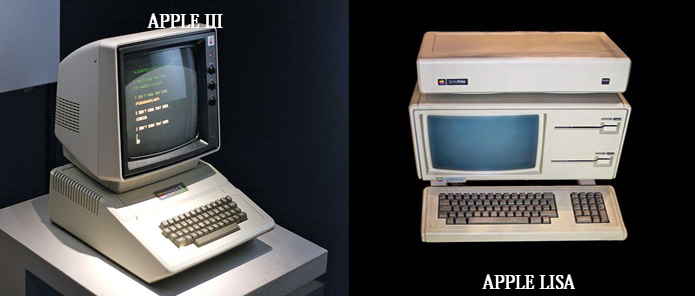
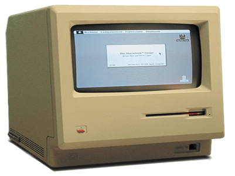

Spajanjem dobrog dijela američkog poslovnog tržišta s Apple II kompanija je donela odluku o gradnji jačeg i bržeg modela koji će dobiti ime Apple III i vremenom naslediti svog prethodnika. Kako je memorija 8-bitnih procesora tehnološki ograničena na 64 kilobajta ona je inovativnom metodom proširena na 256 kilobajta i to tako da kompjuter vidi istovremeno samo onih prvih 64 kilobajta dok je ostatak pohranjen i nevidljiv. Brzina procesora je istovremeno uvećana za 80 % s tim da se zadržala potpuna kompaktibilnost s prethodnikom, a kompjuter je još dobio malena slova koja Apple II nije imao. Bez obzira što se kompjuter prodavao s ugrađenom disketnom jedinicom on je s svojom cenom od 7.500 američkih dolara i početnim tehničkim greškama - zbog kojih je cela prva serija povučena - bio potpuni debakl. To na kraju ipak nije uticalo na izlazak Applea na burzu 1980. godine u najvećem javnom izdavanju dionica nakon Ford Motor Company 1956. godine.Drugi neuspjeli projekt s početka 1980-ih je bio kompjuter Apple Lisa čija zamisao od datira od Jobsovog posjeta Xeroxu 1979. godine kada mu je demonstriran prvi GUI. Ovaj kompjuter je bio nekompaktibilan s Apple II serijom, ali je, izgrađen od procesora Motorola 68000 postao najnapredniji kompjuter na tržištu. Međutim, cijena prvovitno zamišljena na 2.000 dolara je do 1983. godine narasla na 10.000 dolara, čime je praktički odbila sve potencijalne kupce. Korporacija je svoj spas potražila u njegovoj jeftinijoj verziji nazvanoj Macintosh.
 Slika 3:Apple III.; Slika 4:Apple LisaPočetkom 1980-ih godina Apple je doživio veliku transformaciju u kojoj njegova dva osnivača Wozniak i Jobs gube kontrolu nad korporacijom koju su osnovali. Prvi je sa scene nestao tehnološki "čarobnjak" Steve Wozniak, koji je u februaru 1981. godine doživio avionsku nesreću nakon koje je imao problema sa pamćenjem, te više nikada nije obnovio svoju tehnološku magiju. Steve Jobs je pak napustio ili je - prema nekim tumačenjima - protjeran s projekata Apple III i Apple Lisa. Stoga je svu svoju nadu, trud uložio u projekt gradnje novog 16bitnog "jeftinog" kompjutera imena Macintosh.Taj je kompjuter najavljen u jesen 1983. a na tržište je izašao 24.1. 1984. praćen znamenitom televizijskom reklamom "1984" u režiji Ridleya Scotta i premijerno prikazanom na Super Bowlu XVIII. Ta reklama, koja se smatra umjetničkim djelom [1] najavila je oslobađanje korisnika od jednolične dominacije IBM PCa. Njeni navodi su se na dugi rok pokazali djelomično opravdanima, s obzirom da je Macintosh, bez obzira na sve svoje nedostatke, izazvao promjenu na tržištu računara svojim korisničkim sučeljem, računarskim mišem i mogućnošću spajanja na računarsku mrežu. Jedini problem bila je cijena od 2495 $ za što se dobivalo: 128KB RAM, 12 inčni crno-bijeli monitor, disketna jedinica od 400 KB i 16 bitni Motorola 68000 procesoru s taktom od 8MHz. Za razliku 8bitnih Apple II računara, Macintosh je bio zasnovan za zatvorenom sistemu te nije bio napravljen za lako proširivanje preko kartica za proširenje kao što su bili raniji kompjuteri. Rezultat toga je bio 70.000 prodanih primjeraka u prva dva mjeseca marketinške kampanje; nakon nje je prodaja gotovo u potpunosti zastala, tako da je kompanija preživljavala prije svega zbog visokih cijena, odnosno profitabilnosti zastarjelih Apple II kompjutera - prodavanih po cijeni od 1200 $ u vrijeme dok su se slični kompjuteri prodavali po cijeni od 200 dolara.
